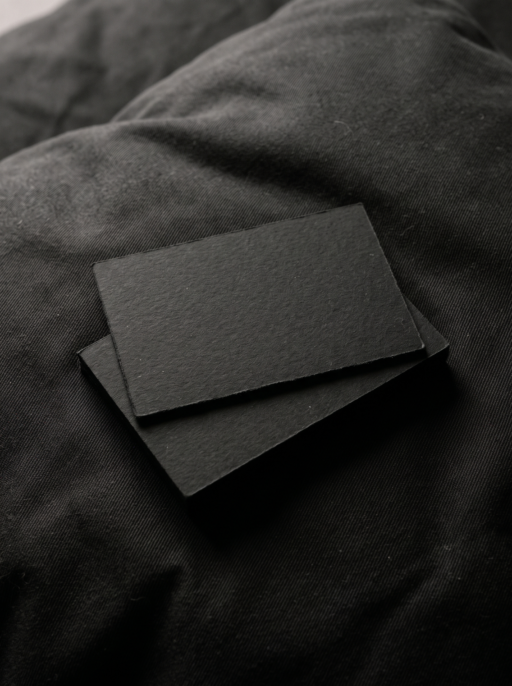
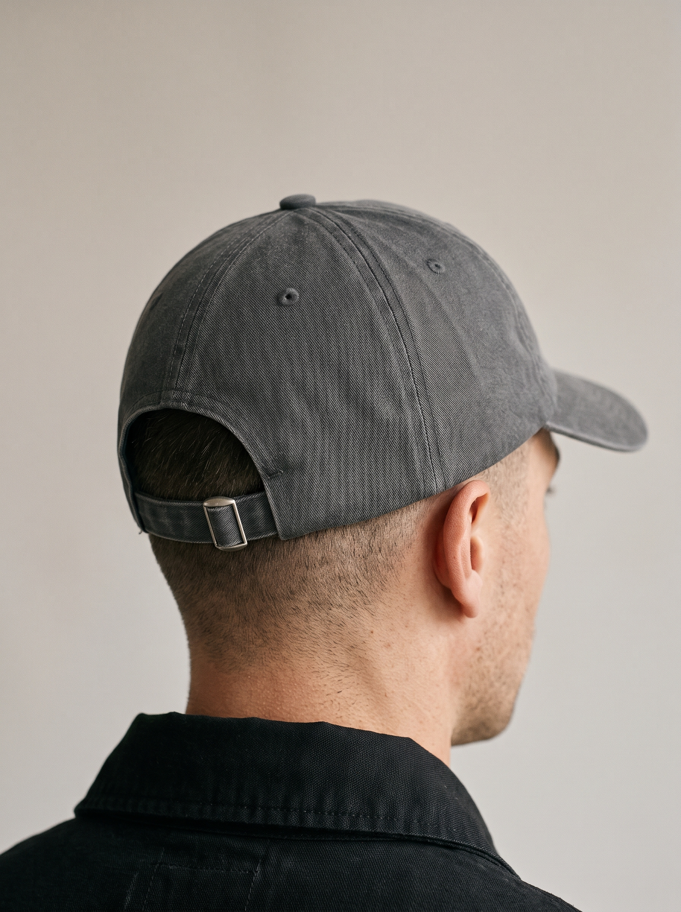
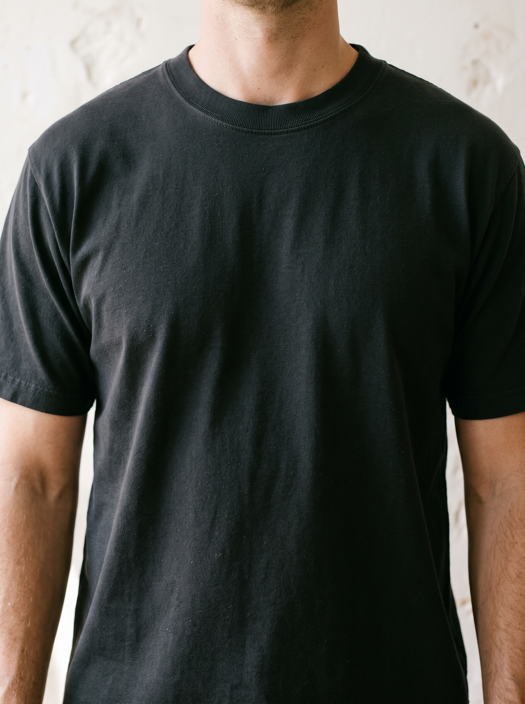
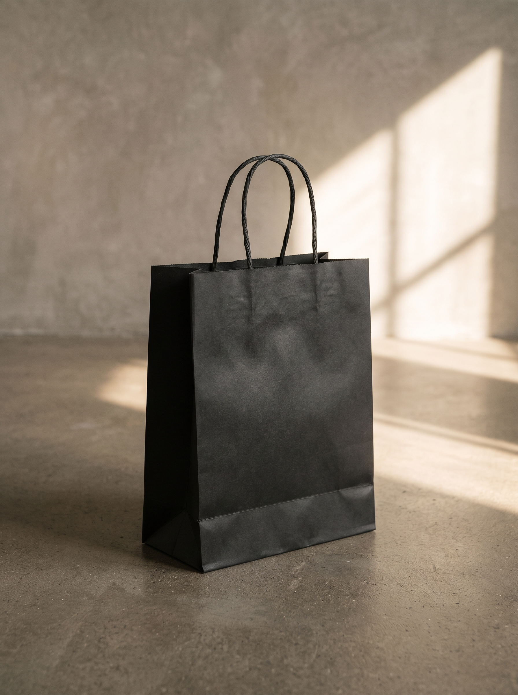
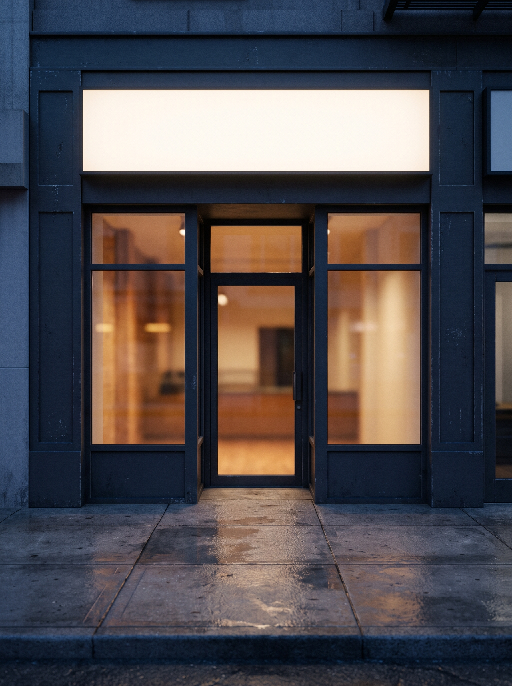
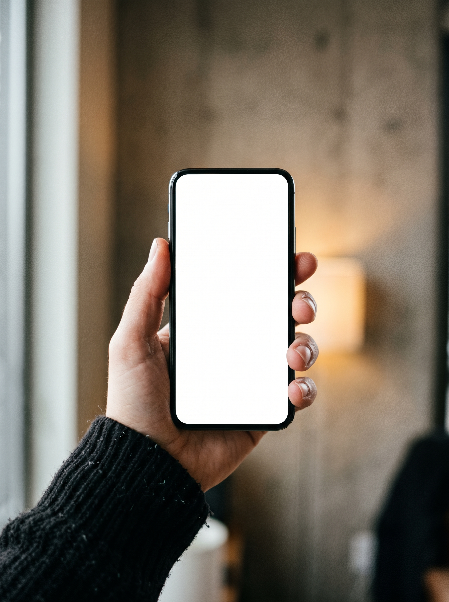

Você cadastra o kit da marca (logo, cores, fontes e textos) e o estúdio aplica tudo em fotos reais, cenas 3D e composições experimentais. Cada uma tem sliders, variações e exportação em alta resolução.






No Estúdio 3D, crie um kit com logo, 4 cores, fontes (Google ou próprias) e os textos. Ele fica salvo no navegador e pode ser exportado em .json.
Escolha uma foto base ou envie a sua. No modo ✎, arraste os 4 cantos até a superfície. Peça, cor e acabamento são definidos por área.
R gera uma variação leve, Shift+R uma agressiva. Trave o que quiser manter e exporte uma base ou o pacote inteiro do cliente.